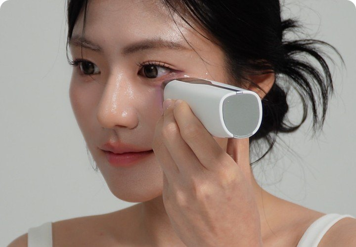

HOME / TECHNOLOGY / 홈뷰티 디바이스 기술
Beauty Device Technology
홈뷰티 디바이스 기술
홈뷰티 디바이스 기술 바로 알기
피부 속에서 열에너지를 만들어 탄력을 관리하는 고주파 기술
고주파는 고주파 전류를 피부에 전달하는 기술입니다.
단순히 기기 표면을 뜨겁게 만들어 피부를 데우는 방식과는 다릅니다. 고주파 에너지가 피부 조직을 통과할 때 조직의 전기적 저항에 의해 열이 발생하는 원리를 이용합니다.
이렇게 형성된 열에너지는 홈뷰티 디바이스에서 주로 피부 탄력과 피부결을 관리하기 위한 기술로 활용됩니다.
하지만 모든 고주파 기기가 같은 방식으로 작동하는 것은 아닙니다. 사용하는 주파수뿐 아니라 전극의 구조, 에너지를 전달하는 시간, 피부와 접촉하는 방식에 따라 실제 에너지 전달 방식과 사용 경험이 달라질 수 있습니다.
그래서 고주파에서는 단순히 “몇 MHz인가”보다도
- 어디에 에너지를 전달하는지,
- 얼마 동안 전달하는지,
- 사용 중 에너지를 얼마나 일정하게 관리할 수 있는지
가 중요합니다.
careCL이 고주파 기술에서 특히 위치와 시간에 주목한 이유도 여기에 있습니다.
소리의 진동 에너지를 이용해 원하는 부위를 관리하는 기술
초음파는 사람이 들을 수 있는 범위를 넘어선 높은 주파수의 음파, 즉 기계적인 진동 에너지를 이용하는 기술입니다.
RF가 전기 에너지를 이용해 조직에서 열을 형성하는 기술이라면, 초음파는 음파의 진동을 피부와 조직으로 전달하는 기술이라는 점에서 원리 자체가 다릅니다.
초음파 기술은 사용하는 주파수와 출력, 그리고 에너지를 전달하는 방식에 따라 목적이 크게 달라집니다.
넓은 범위에 초음파를 전달하는 방식도 있고, 에너지를 특정 지점에 모아 전달하는 집속 초음파(Focused Ultrasound) 방식도 있습니다.
특히 HIFU라고 알려진 High-Intensity Focused Ultrasound는 초음파 에너지를 특정 초점에 집중시키는 기술입니다. 따라서 모든 초음파 디바이스를 HIFU와 같은 기술로 이해해서는 안 됩니다.
즉, 초음파에서는 단순히 “초음파가 들어갔다”보다
- 어떤 주파수의 초음파인지,
- 에너지가 넓게 전달되는지 특정 지점에 집중되는지,
- 어떤 부위를 관리하도록 설계되었는지를 함께 보는 것이 중요합니다.
전기 자극으로 근육의 움직임을 유도하는 기술
EMS는 전기 신호를 이용해 근육에 자극을 전달하는 기술입니다.
얼굴용 홈뷰티 디바이스에서는 주로 얼굴이나 목의 근육을 자극해 윤곽 및 탄력 관리 루틴에 활용됩니다.
기기마다 사용하는 주파수와 파형, 출력 설계가 다르기 때문에 자극의 느낌과 근육 반응 방식도 달라질 수 있습니다.
매우 낮은 세기의 전류를 활용하는 피부 관리 기술
미세전류는 이름 그대로 매우 낮은 세기의 전류를 피부에 전달하는 기술입니다.
EMS가 근육 자극을 목적으로 비교적 뚜렷한 전기 자극을 사용하는 기술이라면, 미세전류는 훨씬 낮은 전류를 사용하기 때문에 사용 중 근육의 움직임이 크지 않은 경우가 많습니다.
홈뷰티에서는 피부 컨디션과 스킨케어를 보조하는 기술로 활용됩니다.
즉,
- EMS = 근육 자극 중심
- Microcurrent = 낮은 전류를 이용한 피부 관리 중심으로 이해하면 쉽습니다.
스킨케어 성분 전달을 돕는 기술
Electroporation은 피부에 짧은 전기 펄스를 전달해, 스킨케어 성분이 피부에 보다 효과적으로 전달될 수 있도록 돕는 기술입니다.
홈뷰티에서는 세럼이나 에센스 같은 화장품과 함께 사용하며, 피부 표면에 머무는 스킨케어 성분의 전달을 보조해 흡수 케어와 피부결·광채 관리에 활용됩니다.
사용하는 전압과 펄스 방식, 함께 사용하는 화장품의 제형과 성분에 따라 사용감과 관리 방식은 달라질 수 있습니다.
고주파와 초음파는 무엇이 다른가요?
| 고주파 | 초음파 | |
|---|---|---|
| 사용하는 에너지 | 고주파 전기 에너지 | 고주파 음파 에너지 |
| 기본 원리 | 조직의 저항을 이용해 열에너지 형성 | 음파의 기계적 진동을 전달 |
| 주요 설계 요소 | 주파수, 전극 구조, 출력, 접촉 시간 | 주파수, 출력, 초점 및 전달 방식 |
| 홈뷰티 활용 | 주로 피부 탄력·피부결 관리 | 목적에 따라 피부 관리부터 집속 에너지 관리까지 다양 |
| 핵심 | 어디에 얼마나 일정하게 전달하는가 | 어디에 어떤 방식으로 음파를 전달하는가 |

에너지를 어디에, 얼마나 일정하게
같은 기술이라도 전달하는 위치와 시간, 접촉 방식에 따라 결과는 달라집니다. 케어클은 그 조건을 고정했습니다.